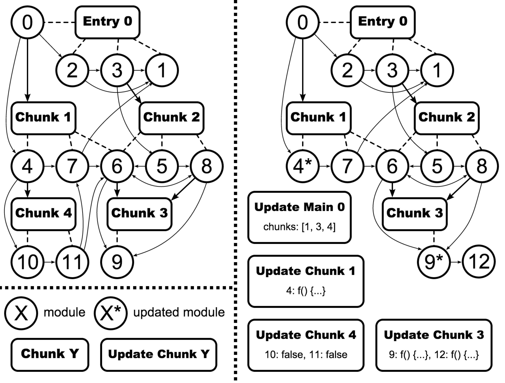

Webpack是什么？
Webpack是德国开发者Tobias Koppers开发的模块加载器,它将根据模块的依赖关系进行静态分析然后将这些模块按照指定的规则生成对应的静态资源。
 设计理念：一切皆模块！
设计理念：一切皆模块！
已有的模块化工具的现状
市面上已经存在的模块管理和打包工具并不适合大型的项目，尤其单页面 Web 应用程序。最紧迫的原因是如何在一个大规模的代码库中，维护各种模块资源的分割和存放，维护它们之间的依赖关系，并且无缝的将它们整合到一起生成适合浏览器端请求加载的静态资源。
前端工程化的建设，早期的做法是使用Grunt、Gulp等构建工具。但本质上它们只是一个任务调度器，将功能独立的任务拆解出来，按需组合运行任务。如果要完成前端工程化，这两者配置门槛很高，每一个任务都需要开发者自行使用插件解决，而且对于资源的依赖管理能力太弱。
已有的模块化工具的弱项:
- 将依赖树拆分成按需加载的块
- 初始化加载的耗时尽量少
- 各种静态资源都可以视作模块
- 将第三方库整合成模块的能力
- 可以自定义打包逻辑的能力
- 适合大项目，无论是单页还是多页的Web应用
为什么要用Webpack？
在 Webpack 当中, 所有的资源都被当作是模块, js, css, 图片等等。因此, Webpack 当中 js 可以引用 css, css 中可以嵌入图片 dataUrl。对应各种不同文件类型的资源, Webpack 有对应的模块 loader来加载。
主要特性
- 代码拆分（同步依赖和异步依赖）
- 智能解析（AMD，CMD，CommonJS，ES6模块，第三方库等）
- Loader（可用于转换其它类型的静态资源为一个原生的JavaScript模块）
- 插件系统（丰富的开源插件，也可以自己开发插件）
- 快速编译（使用异步 I/O 和多级缓存）
安装
需要Node.js v0.6 以上支持，使用npm管理插件
$ npm install webpack -g
如果需要使用 Webpack 开发工具，要单独安装：
$ npm install webpack-dev-server --save-dev
另外一些常用的loader，webpack没有内置的插件也需要通过npm进行安装。
启动webpack
切换到有webpack.config.js的目录然后选择性运行以下命令:
# webpack 开发时的编译（不压缩代码）
$ webpack
# webpack -p 发布时的编译（压缩代码）
$ webpack -p
# webpack --watch 进行开发过程持续的增量编译
$ webpack --watch
# webpack -d 来生成 SourceMaps
$ webpack -d
配置文件
webpack.config.js
- node.js形式的模块，返回一个json格式的配置信息对象
- 通过
--config选项来指定配置文件
var webpack = require('webpack');
var commonsPlugin = new webpack.optimize.CommonsChunkPlugin('common.js');
var PATH = "E:/DevelopmentCode/GitHub/webpack/getstart"
module.exports = {
context:__dirname+'/app' //处理entry的基本路径（绝对路径）
//entry:"./entry.js",
entry:{
entry1:"./entry1.js",
entry2:["./entry2.js","./entry3.js"]
},
output:{
path:PATH,
filename:"[name].bundle.js"
},
module:{
loaders:[
{
test:/\.css/,
loader:"style!css"
}
]
},
plugins:[
commonsPlugin
],
};
配置文件说明：
entry：配置打包文件的入口（包括生成文件的名字和所调用的资源），如果是一个字符串（一般是一个路径），则把其下所有的资源打包成一个模块，供给页面调用；如果是一个数组，则可以提供多个入口，这对多页面的时候尤其有用！output：影响输出和编译，告诉webpack怎么去把编译出来的文件写入到硬盘上。虽然有多个入口文件，但只指定一个输出配置。path定义了输出的文件夹，filename则定义了打包结果文件的名称，filename里面的[name]会由entry中的键（这里是entry1和entry2）替换。module：定义了模块的处理逻辑。loaders则定义一系列的加载器，加载通过正则匹配到的各种资源。plugins：定义了需要使用的插件。
根据不同的入口，生成单个或多页面需要的文件:
单个入口：
{ entry: './src/app.js', output: { filename: 'bundle.js', path: './built' } } // writes to disk: ./built/bundle.js多个入口（entry是一个数组或者使用了CommonsChunkPlugin插件）,需要使用以下替换，确保每个文件有一个唯一的名称：
[name]由entry指定的分支名字替换[hash]由编译生成的哈希值替换[chunkhash]由entry指定分支对应的哈希值替换{ entry: { app: './src/app.js', search: './src/search.js' }, output: { filename: '[name].js', path: __dirname + '/built' } } // writes to disk: ./built/app.js, ./built/search.js
Loader
- 转换其它类型的文件为Webpack可以处理的JavaScript模块(模块和资源的转换器)
- Loader本身是运行在 node.js 环境中的 JavaScript 模块。
- Loader本身是一个函数，接受源文件作为参数，返回转换的结果。
- loader一般以xxx-loader的方式命名，xxx 代表了这个loader要做的转换功能，比如json-loader
- 在引用loader的时候可以使用全名 json-loader，或者使用短名 json
- Loader可以在require()引用模块的时候添加，也可以在 webpack 全局配置中进行绑定，还可以通过命令行的方式使用
Loader特性
- 通过管道方式链式调用（每个 loader 可以把资源转换成任意格式并传递给下一个 loader ，但是最后一个 loader 必须返回 JavaScript）
- 同步或异步执行
- 可以接受参数，以此来传递配置项给 loader。例如：'url-loader?limit=1024'
- 可以通过文件扩展名（或正则表达式）绑定给不同类型的文件
- 除了通过package.json的main指定，通常的模块也可以导出一个loader来使用
- Loader 可以访问配置
- 插件系统
- 可以分发出附加的任意文件
- 是基于nodejs和npm的,管理方便
Loader使用
可以直接通过require使用：
var moduleWithOneLoader = require("my-loader!./my-awesome-module"); require("./loaders/my-loader!./my-awesome-module"); require("style-loader!css-loader!less-loader!./my-styles.less");可以在配置文件里边写：
module: { loaders: [ { test: /\.css$/, loader: "style!css" } ] }
webpack资源管理
资源的获取和引用
- 同时提供了对CommonJS、AMD和ES6模块化标准的支持，对于非前三种标准开发的模块，webpack提供了shimming modules的功能。
- webpack内部实现了一套资源加载机制，也即独特的Loader
样式，图片等资源，都可以通过require引用到入口文件里：
// a.js // 加载css资源 require('../css/a.css'); // 加载其他js资源 var foo = require('./widgets/foo'); var bar = require('./widgets/bar'); // 加载图片资源 var loadingImg = require('../img/loading.png'); var img = document.createElement('img'); img.src = loadingImg;- 还支持使用require()获取资源时在path前面指定loader：
require("!style!css!less!bootstrap/less/bootstrap.less"); // “bootstrap.less”这个资源会先被"less-loader"处理， // 其结果又会被"css-loader"处理，接着是"style-loader" // 可类比pipe操作
资源的依赖处理
webpackJsonp([0], {
/***/0:
/***/function(module, exports, __webpack_require__) {
__webpack_require__(6);
var foo = __webpack_require__(25);
var bar = __webpack_require__(26);
var loadingImg = __webpack_require__(24);
var img = document.createElement('img');
img.src = loadingImg;
},
/***/6:
/***/function(module, exports, __webpack_require__) {
...
},
/***/7:
/***/function(module, exports, __webpack_require__) {
...
},
/***/24:
/***/function(module, exports) {
...
},
/***/25:
/***/function(module, exports) {
...
},
/***/26:
/***/function(module, exports) {
...
}
});
即把加载的所有资源重新生成一个JavaScript模块，并给它编号，并通过模块的id来处理依赖。
资源的编译输出
webpack的三个概念：模块（module）、入口文件（entry）、分块（chunk）
module指各种资源文件，如js、css、图片、svg、scss、less等等，一切资源皆被当做模块。
webpack编译输出的文件包括以下2种：
- entry：入口，可以是一个或者多个资源合并而成，由html通过script标签引入
- chunk：被entry所依赖的额外的代码块，同样可以包含一个或者多个文件
chunk分块的作用
按需加载：需要用到的时候我们才异步加载我们需要的模块。这部分的代码一般不用打包到入口文件里边。
webpack提供了非常好的支持，即code splitting，即使用require.ensure()作为代码分割的标识。
有需求场景如下：
var component = getUrlQuery('component');
if('dialog' === component) { //加载dialog_[hash].chunk.js
require.ensure([], function(require) {
var dialog = require('./components/dialog');
// todo ...
});
}
if('toast' === component) { //加载toast_[hash].chunk.js
require.ensure([], function(require) {
var toast = require('./components/toast');
// todo ...
});
}
公共代码的处理
- 多个页面共同调用的js，可以使用CommonsChunkPlugin插件对指定的chunks进行公共模块的提取：
var chunks = Object.keys(entries); plugins: [ new CommonsChunkPlugin({ name: 'vendors', // 将公共模块提取，生成名为`vendors`的chunk chunks: chunks, minChunks: chunks.length // 提取所有entry共同依赖的模块 }) ], 组件的封装：
// js/components/component-x.js require('./component-x.css'); // @see https://github.com/okonet/ejs-loader var template = require('./component-x.ejs'); var str = template({foo: 'bar'}); function someMethod() {} exports.someMethod = someMethod;使用组件：
// js/a.js import {someMethod} from "./components/component-x"; someMethod();
资源实时更新
webpack提供了强大的热更新支持，即HMR(hot module replace)。
HMR简单说就是webpack启动一个本地webserver（webpack-dev-server），负责处理由webpack生成的静态资源请求。注意webpack-dev-server是把所有资源存储在内存的，所以你会发现在本地没有生成对应的chunk访问却正常。
webpack-dev-server使用
webpack-dev-server 是一个轻量的node.js Express服务器, 它采用了webpack-dev-middleware来进行webpack打包。它的运行环境是通过socket.io来连接到服务器的。socket.io会向客户端发出编译状态的信息，然后这些信息会对这些事件作出反应。
webpack-dev-server 支持多种模式去自动刷新你的页面:
- iframe 模式 (当页面发生变化时，以iframe的形式嵌入在页面，然后自动刷新页面)
- inline 模式 (当页面发生变化时，webpack-dev-server 会把更新内容内嵌到打包文件中，然后自动刷新页面)
这两种模式都支持热加载组件(打包文件通知浏览器更新部分更改内容，而不用整个页面重新刷新)。热加载组建能在运行的app中动态地更新、注入新增加或更改的代码。
配置文件中使用webpack-dev-server
配置:
module.exports = {
//...
//webpack-dev-server 插件配置
devServer:{
historyApiFallback:true,
hot:true,
inline:true,
progress:true
},
//...
};
开一个cmd窗口使用命令：
$ webpack-dev-server --hot --inline
也可以在package.json的scripts项上配置:
...
"scripts": {
"start": "webpack-dev-server --hot --inline",
...
},
...
node.js使用方式
// app.js
var webpackDevMiddleware = require('koa-webpack-dev-middleware');
var webpack = require('webpack');
var webpackConf = require('./webpack.config');
app.use(webpackDevMiddleware(webpack(webpackConf), {
contentBase: webpackConf.output.path,
publicPath: webpackConf.output.publicPath,
hot: true,
stats: webpackConf.devServer.stats
}));
资源路径切换
由于入口文件是手动使用script引入的，在webpack编译之后入口文件的名称和路径一般会改变，即开发环境和生产环境引用的路径不同。
// 开发环境
// a.html
<script src="/__build/vendors.js"></script>
<script src="/__build/a.js"></script>
// 生产环境
// a.html
<script src="http://cdn.site.com/js/460de4b8.vendors.min.js"></script>
<script src="http://cdn.site.com/js/e7d20340.a.min.js"></script>
针对这个情况，webpack提供了HtmlWebpackPlugin插件来处理这个问题。
html-webpack-plugin使用
使用时需要安装依赖:
$ npm install html-webpack-plugin --save-dev
HtmlWebpackPlugin支持从模板生成html文件，生成的html里边可以正确解决js打包之后的路径、文件名问题，配置示例：
// webpack.config.js
output: {
...
publicPath: debug ? '/__build/' : 'http://cdn.site.com/'
},
//...
plugins: [
new HtmlWebpackPlugin({
template: './src/a.html',
filename: 'a',
inject: 'body',
chunks: ['vendors', 'a']
})
]
综述
webpack目前还在发展中，有一些问题暂时还没法处理：
- sprites图合并
- 工程的远程部署
但是，webpack可以组合各种开源技术栈（gulp，grunt，bower，karma等）。没有复杂的资源依赖配置，工程结构也相对简单和灵活。
参考资料
https://segmentfault.com/a/1190000003499526#articleHeader9
http://www.alloyteam.com/2016/01/webpack-use-optimization/
http://guowenfh.github.io/2016/03/24/vue-webpack-01-base/
https://segmentfault.com/a/1190000002552008
http://my.oschina.net/bosscheng/blog/514638
http://www.cnblogs.com/YikaJ/p/4586703.html?utm_source=tuicool&utm_medium=referral